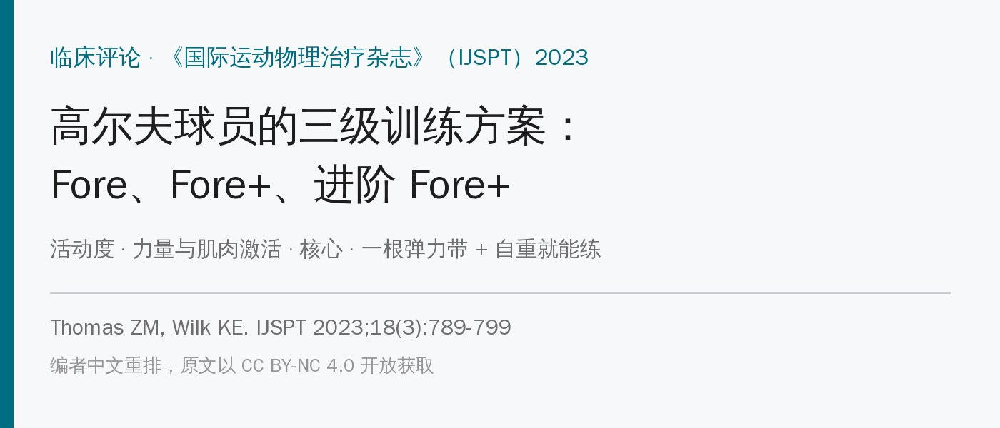
🔖原文信息（编者中文重排）
📚 文献信息
▪ Thomas ZM, Wilk KE. The Golfer’s Fore, Fore +, and Advanced Fore + Exercise Program: An Exercise Series and Injury Prevention Program for the Golfer. Int J Sports Phys Ther. 2023;18(3):789-799.
▪ 作者来自美国冠军运动医学中心（Champion Sports Medicine）、美国运动医学研究所（ASMI）
▪ 临床评论（证据等级 5 级）；DOI：10.26603/001c.74973
很多人觉得高尔夫是“散步 + 挥杆”，不会受伤。但数据不是这样：业余球员每年受伤率 15.8%～40.9%，职业球员一年内 31%、整个职业生涯 66%。而且82.6% 是过度使用伤，只有 17.4% 是一次性外伤。
• 职业球员：下腰（44%）和腕（44%）最多，其次是肘（23%）、颈（20%）、肩（19%）；男性下腰受伤是女性的 2.5 倍
• 业余球员：肘（24.9%）、肩（18.6%）、腰椎（15.2%）
• 受伤的原因也不同：职业球员主要是练得太多，业余球员更多是挥杆动作不好
• 有研究发现，职业球员腰痛和前导侧髋内旋减少、腰椎伸展减少有关
现代挥杆讲究“X 因子”——上半身和骨盆的分离角度越大，杆头速度越快。但结束时常出现过度后仰的“反 C 字”收杆姿势，会增加腰椎小关节的负担。另外，水平面上的髋关节活动度，能解释48% 的球速差异和 45% 的距离差异。
所以这篇的思路是：做一套不需要监督、在家或球场就能练的方案，分三个难度等级，用的器材只有自重 + 一根弹力带，目的是预防受伤、提高力量和活动度、顺便提升表现。
• 剂量：每个动作 2 组 × 10 次，组间几乎不休息
• 每周练几次，按训练强度和赛季来定；可以当打球前的热身，也可以作为日常训练的基础
• 三级递进：Fore（基础）→ Fore+（中级）→ 进阶 Fore+（高级），每级都分活动度、力量/肌肉激活、核心三块
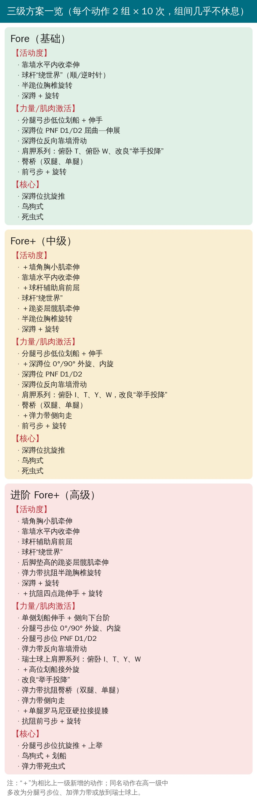
🔖三级方案一览（编者根据原文附录 1～3 整理）
活动度部分：
• 靠墙水平内收牵伸：背靠墙站着固定肩胛，手臂横过胸前往对侧拉。拉的是肩后方，挥杆时前导手和后手都需要
• 球杆“绕世界”：双手握球杆，顺时针、逆时针绕圈，把盂肱关节各个方向都活动开
• 半跪位胸椎旋转和深蹲 + 旋转：开始加入下肢和胸椎的活动度
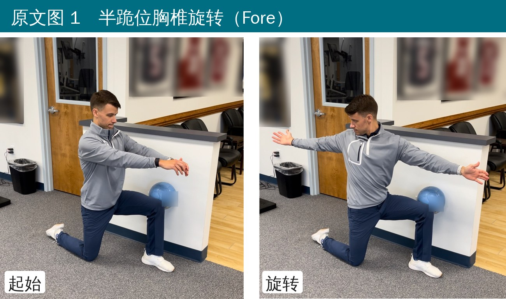
🔖原文图 1 半跪位胸椎旋转
力量部分：
• 分腿弓步低位划船 + 伸手：分腿站，对侧手在前（比如左腿在前、右手握弹力带），右手划船、左手往前伸，直到右臂贴体侧。伸手那侧顺带练胸椎旋转，强调骨盆稳住、上半身转；第二组换腿。持续保持弓步，是为了练单腿稳定——挥杆时重心要从后腿转到前腿
• 深蹲位 PNF D1/D2 模式：侧对弹力带，从低往高斜向拉过身体。D1 屈曲：内侧手握带、从内侧髋开始；D2 屈曲：外侧手握带、从内侧髋开始。回程（伸展）也要慢，练离心控制
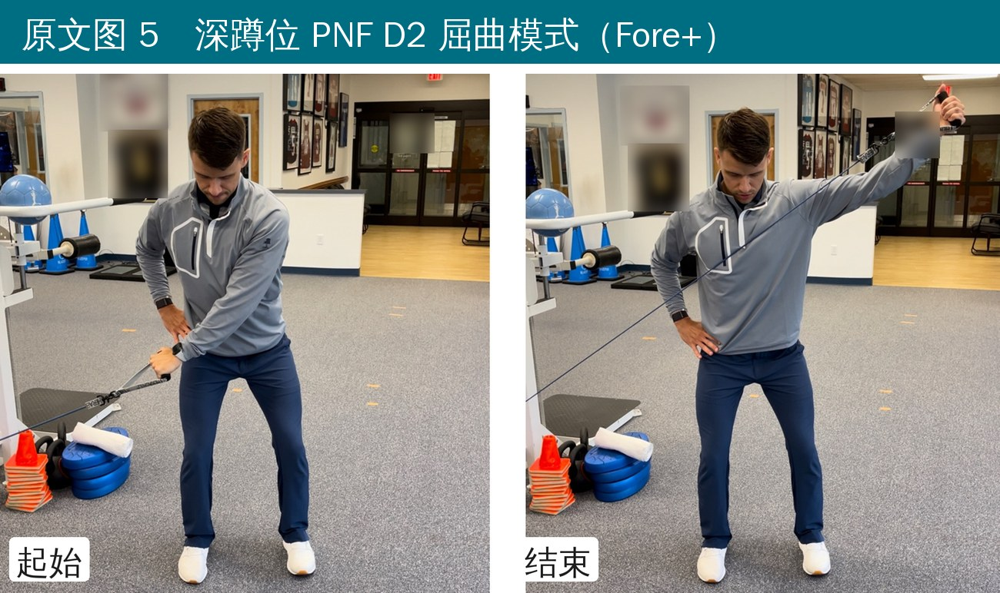
🔖原文图 5 深蹲位 PNF D2 屈曲模式（Fore+ 中的同一动作）
• 深蹲位反向靠墙滑动：保持半蹲，手、肘、下背都贴住墙往上滑，练上肢柔韧、胸椎活动和后肩袖激活
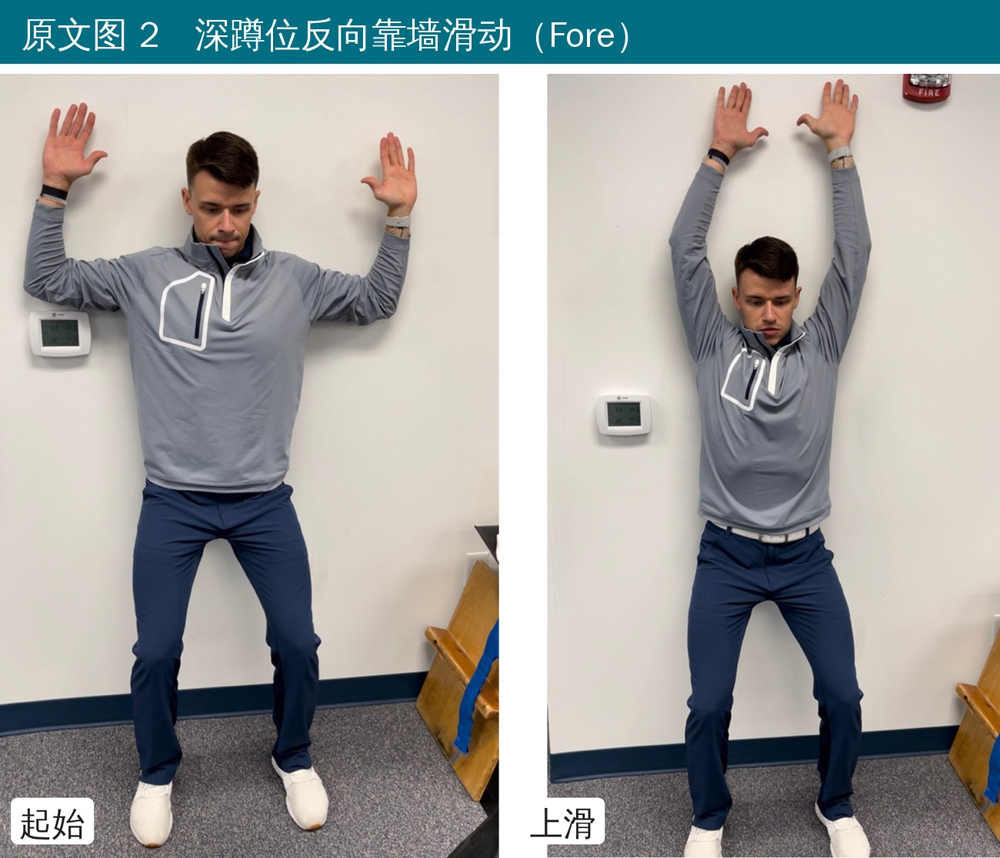
🔖原文图 2 深蹲位反向靠墙滑动
• 肩胛系列：俯卧在床上、一只手垂在床边，做俯卧 T（水平外展）和俯卧 W（高位划船接外旋）
• 改良“举手投降”：半蹲，双手各握弹力带一端，屈肘 90° 贴在体侧、拇指朝外、掌心朝上，肘不离身体往外旋，同时夹紧肩胛，保持 2 秒再回。作者团队未发表的肌电研究发现，它的下斜方肌激活最高、上斜方肌最少
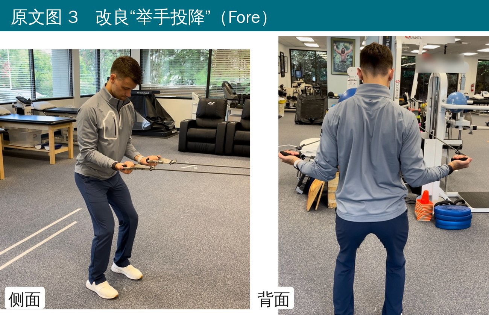
🔖原文图 3 改良“举手投降”
• 臀桥（双腿、单腿）：仰卧屈膝约 90°、脚与肩同宽，脚跟发力，收紧核心和臀部抬起，保持 2 秒。单腿版更多练髋外侧，稳定骨盆
• 前弓步 + 旋转：双手平举球杆，往前弓步，向前腿一侧转体（手臂伸直），再从前腿蹬回
核心部分：
• 深蹲位抗旋推（Pallof 推）：半蹲，侧对弹力带，双手握带贴在胸下，往正前方推直，不让躯干被带转，练水平面稳定
• 鸟狗式：四点跪，肩在腕正上方、髋在膝正上方，核心收紧、脊柱中立；一侧手往前伸、对侧腿往后蹬，保持 2 秒，换边
• 死虫式：仰卧，交替伸对侧手脚，保持核心稳定
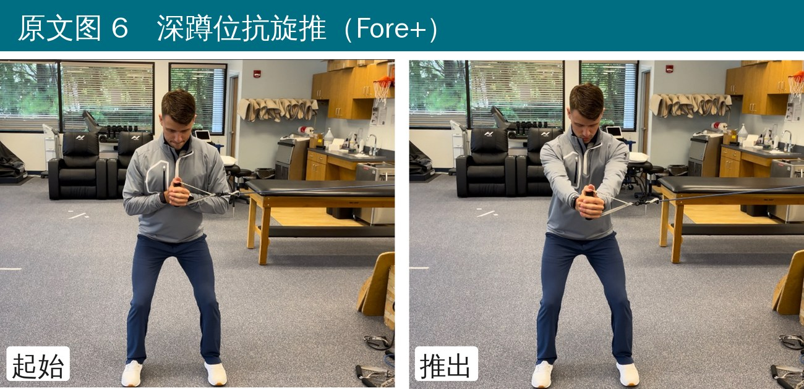
🔖原文图 6 深蹲位抗旋推
在基础版上加量：活动度加了墙角胸小肌牵伸、球杆辅助肩前屈、跪姿屈髋肌牵伸；力量加了深蹲位 0°/90° 外旋和内旋、俯卧 I 和 Y、弹力带侧向走。
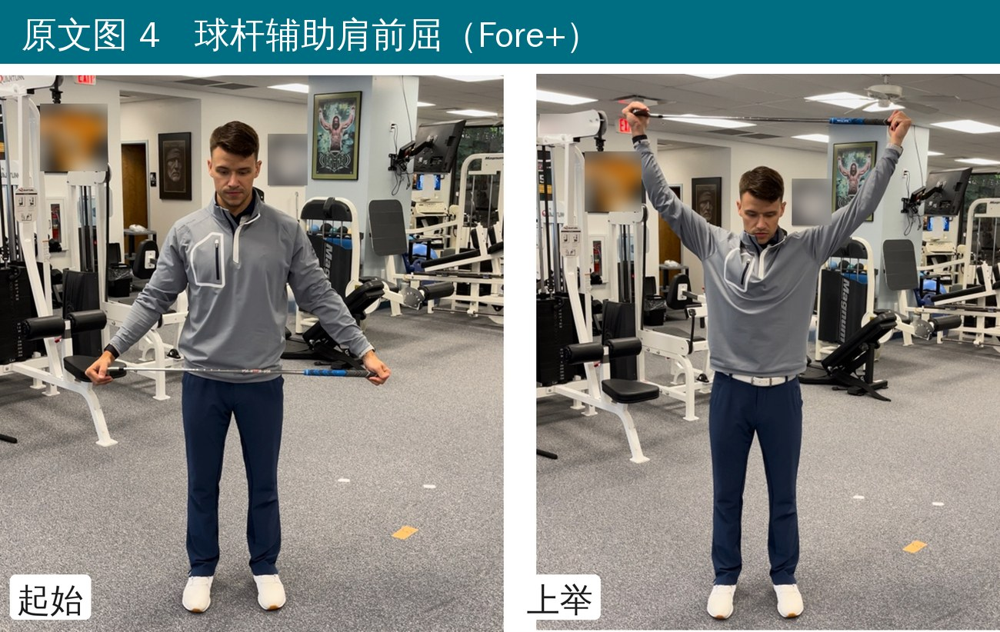
🔖原文图 4 球杆辅助肩前屈
在中级版上加难度：很多动作从深蹲位改成分腿弓步位（外旋内旋、PNF、抗旋推），屈髋肌牵伸改成后脚垫高，胸椎旋转和靠墙滑动加弹力带，肩胛系列放到瑞士球上；新增了抗阻四点跪伸手旋转、单腿罗马尼亚硬拉接提膝、高位划船接外旋，核心动作也升级成抗旋推 + 上举、鸟狗式 + 划船、弹力带死虫式。
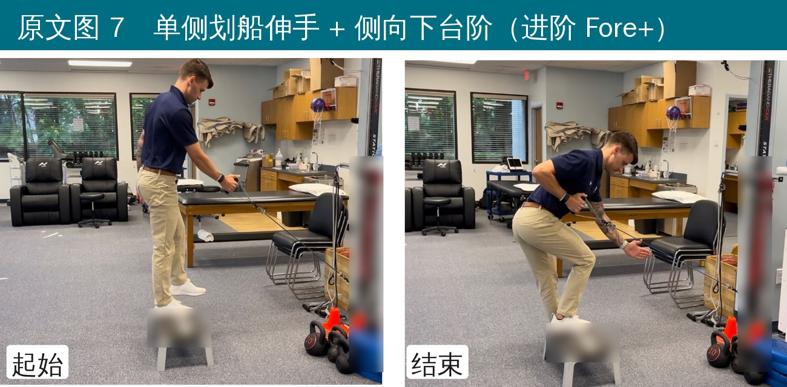
🔖原文图 7 单侧划船伸手 + 侧向下台阶
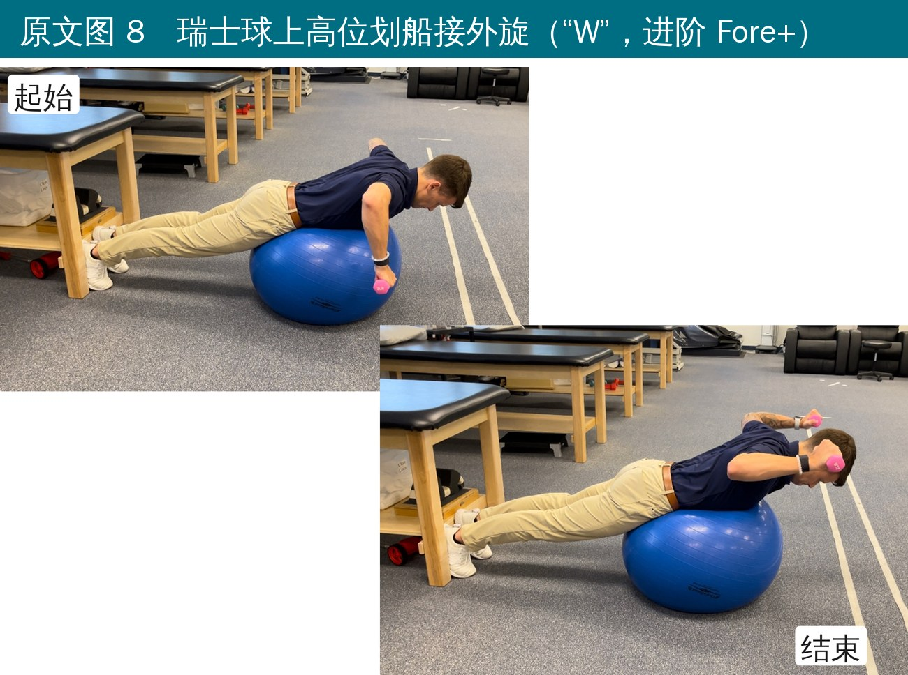
🔖原文图 8 瑞士球上高位划船接外旋（“W”）
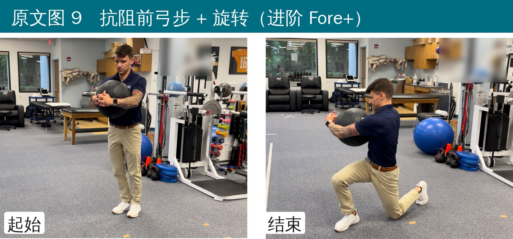
🔖原文图 9 抗阻前弓步 + 旋转
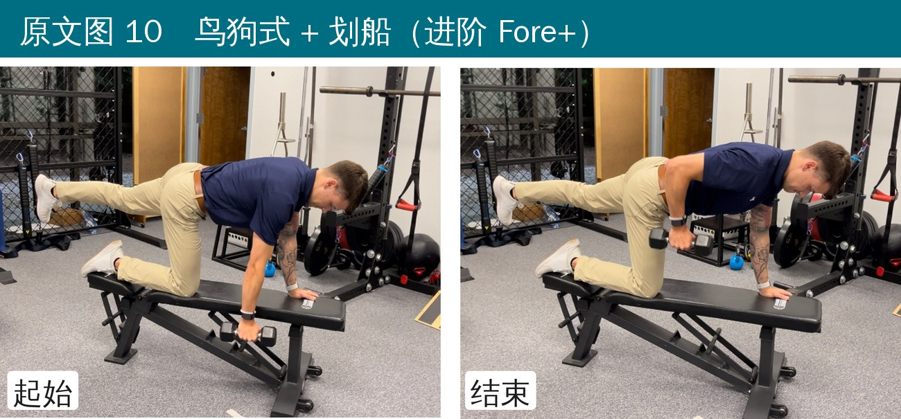
🔖原文图 10 鸟狗式 + 划船
• 证据等级 5 级：这是作者的经验方案，没有任何试验验证它能不能减少受伤或提高表现
• “改良举手投降下斜方肌激活最高”来自作者团队未发表的预实验，无法核实
• 进阶标准没写：什么时候从 Fore 升到 Fore+、再到进阶版，原文没给条件
• 原文写基础版有“4 个核心动作”，附录和后文都只有 3 个；正文还让读者参考“表 2、表 3”，但文中并没有这两张表
• 原文给每部分配了视频二维码，但编者扫码发现链接已被二维码服务商停用，视频看不到了
• 版权声明写的是“CC BY 4.0”，括号里却是 CC BY-NC 4.0，两者不一致
这套方案的价值在于简单、全身、和挥杆动作贴得近：分腿弓步、旋转、单腿稳定、水平面抗旋，基本都在模拟挥杆时“下肢稳住、上身转”的需求。器材只要一根弹力带，球员可以在家、在练习场边做。
临床上可以这样用：先评估髋内旋、胸椎旋转、肩后方紧张度、单腿稳定这些和挥杆相关的指标，哪里差就多练哪部分；能轻松完成 2 组 × 10 次、动作质量好，再往上一级走。有腰痛史的球员，额外注意收杆时别“反 C”后仰，髋和胸椎的旋转要先练够。
原文附录 1 Fore 基础版
| 部分 | 动作 |
|---|---|
| 活动度（上下肢与脊柱） | 靠墙水平内收牵伸；球杆“绕世界”（顺/逆时针）；半跪位胸椎旋转；深蹲 + 旋转 |
| 力量/肌肉激活 | 分腿弓步低位划船 + 伸手；深蹲位 PNF D1、D2 屈曲/伸展；深蹲位反向靠墙滑动；肩胛系列（俯卧 T、俯卧 W、改良“举手投降”）；臀桥（双腿、单腿）；前弓步 + 旋转 |
| 核心激活 | 深蹲位抗旋推；鸟狗式；死虫式 |
原文附录 2 Fore+ 中级版
| 部分 | 动作 |
|---|---|
| 活动度（上下肢与脊柱） | 墙角胸小肌牵伸；靠墙水平内收牵伸；球杆辅助肩前屈；球杆“绕世界”；跪姿屈髋肌牵伸；半跪位胸椎旋转；深蹲 + 旋转 |
| 力量/肌肉激活 | 分腿弓步低位划船 + 伸手；深蹲位 0°、90° 外旋；深蹲位 0°、90° 内旋；深蹲位 PNF D1、D2；深蹲位反向靠墙滑动；肩胛系列（俯卧 I、T、Y、W，改良“举手投降”）；臀桥（双腿、单腿）；弹力带侧向走；前弓步 + 旋转 |
| 核心激活 | 深蹲位抗旋推；鸟狗式；死虫式 |
原文附录 3 进阶 Fore+ 高级版
| 部分 | 动作 |
|---|---|
| 活动度（上下肢与脊柱） | 墙角胸小肌牵伸；靠墙水平内收牵伸；球杆辅助肩前屈；球杆“绕世界”；后脚垫高的跪姿屈髋肌牵伸；弹力带抗阻半跪胸椎旋转；深蹲 + 旋转；抗阻四点跪伸手 + 旋转 |
| 力量/肌肉激活 | 单侧划船伸手 + 侧向下台阶；分腿弓步位 0°、90° 外旋；分腿弓步位 0°、90° 内旋；分腿弓步位 PNF D1、D2；弹力带反向靠墙滑动；瑞士球上肩胛系列（俯卧 I、T、Y、W）；高位划船接外旋；改良“举手投降”；弹力带抗阻臀桥（双腿、单腿）；弹力带侧向走；单腿罗马尼亚硬拉接提膝；抗阻前弓步 + 旋转 |
| 核心激活 | 分腿弓步位抗旋推 + 上举；鸟狗式 + 划船；弹力带死虫式 |
欢迎关注悦美力公众号，获取更多物理治疗的专业知识！
📄参考文献：
Thomas ZM, Wilk KE. The Golfer’s Fore, Fore +, and Advanced Fore + Exercise Program: An Exercise Series and Injury Prevention Program for the Golfer. Int J Sports Phys Ther. 2023;18(3):789-799. doi:10.26603/001c.74973
原文以 CC BY-NC 4.0 协议开放获取（仅限非商业使用）。动作照片来自原文（背景球衣姓名、器械品牌已模糊），方案一览图和附录清单为编者翻译整理，仅用于学术交流。